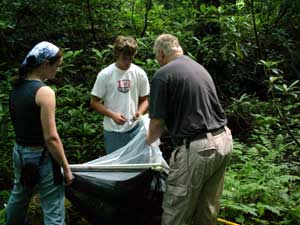
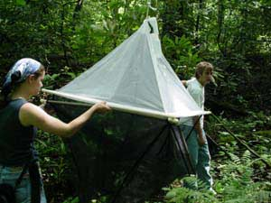
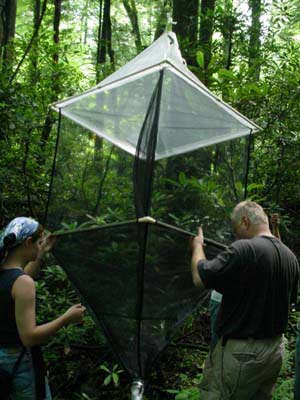
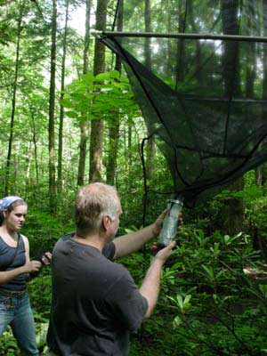
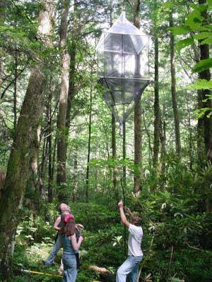
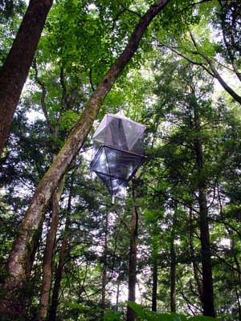

| There is always much more going on besides the climbing during the three weeks in the field. If you are not up in a tree obtaining specimens and environmental data, then you are working as a "ground crew" person. The ground crew stays near the tree to help insure the safety of the climber, gather the specimens sent down from the tree, and to send up any needed items. The ground crew also records information about the tree in the field book that contains information on each tree climbed, including GPS readings that will allow the tree to be revisited easily. Also, a voucher specimen, a branch with leaves, is collected from each tree. |
|

| 
It takes more than one person to prepare and raise an insect canopy trap. First a throw line must be shot up over a branch with the Big Shot, then the trap is prepared. Here you see Amber and Tommy holding the net while Dr. Steve Wilson pours alcohol into the upper bottle that will trap the insects that climb "up" after flying into the net. |
Once the net is partially
raised, alcohol can be added to the lower bottle that will trap the insects
that climb "down" upon flying into the net. Once the trap is raised,
it is secured with a second line and left for two or more days.
 |
 |
|  |  |  |
CLICK
HERE to
see a list of the locations within the GSMNP that the team visited to collect
data.
CLICK HERE to get a glimpse of what life was like at the Cosby field station house.